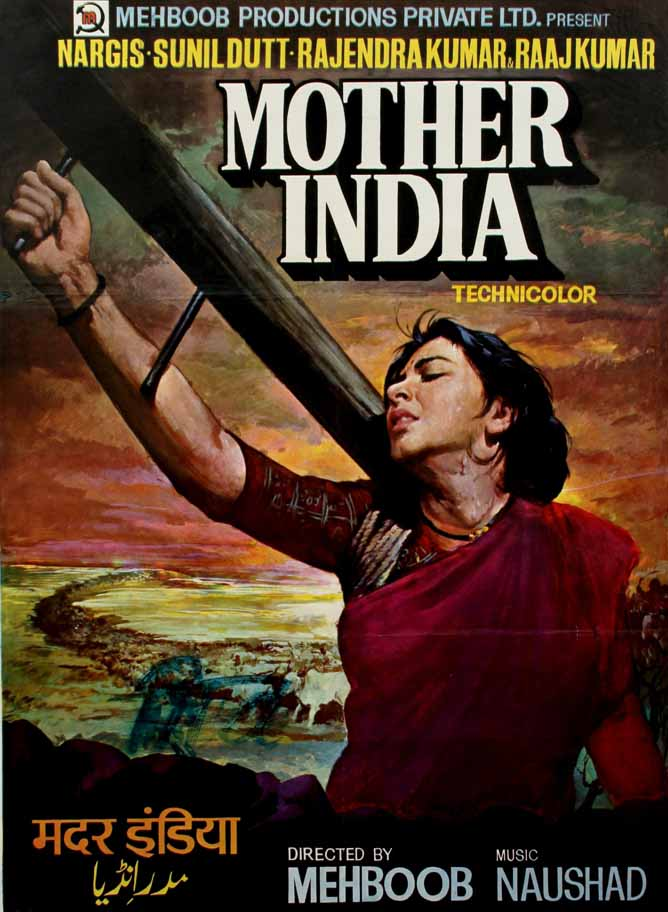

Top 5 most intresting movies in the Indian Cinema
Mother India (1957)

Pros:
- Iconic portrayal of a strong female protagonist.
- Addresses social issues like poverty and women's empowerment.
Cons:
- Lengthy runtime may be a drawback for some viewers.
- Some critics argue that it portrays rural life in an overly sentimental manner.
Sholay (1975)

Pros:
- Epic action-adventure with memorable characters and dialogues.
- Successful blend of multiple genres, including drama, comedy, and romance.
Cons:
- Lengthy runtime and slower pacing in certain parts.
- Some viewers may find the violence excessive.
Lagaan (2001)

Pros:
- Unique storyline revolving around cricket and colonial India.
- Impressive production design and cinematography.
Cons
- Lengthy runtime might require patience from viewers.
- Some critics argue that the romantic subplot is underdeveloped.
Rang De Basanti (2006)

Pros:
- Thought-provoking social commentary on contemporary India.
- Stellar performances by the ensemble cast.
Cons:
- Some critics argue that certain characters lack depth.
- The ending may be considered controversial by some viewers.
Bhahubali:The begining(2015)

Pros:
- Epic Scale: Visually stunning with grand effects, action, and sets.
- Engaging Storyline: Captivating narrative blending fantasy, action, romance, and drama.
Cons:
- Pacing Issues: Occasional slow pacing, especially in the first half.
- Lack of Character Development: Limited development for secondary characters, leading to one-dimensional portrayal.